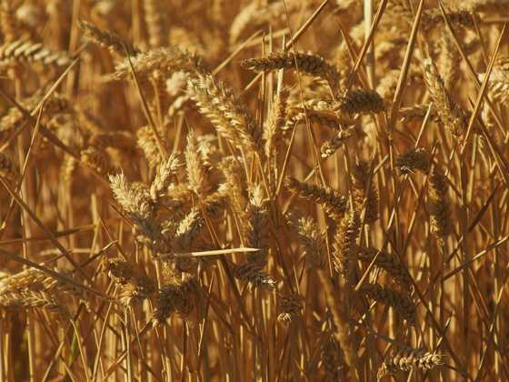
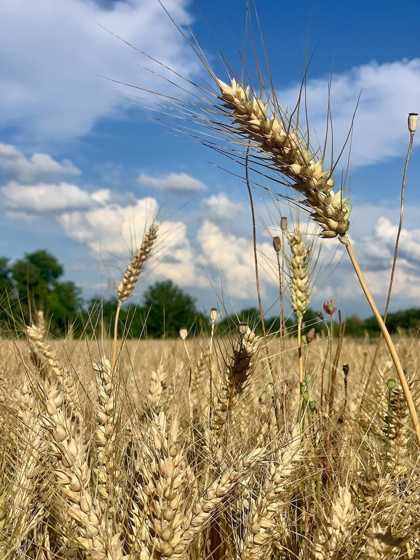
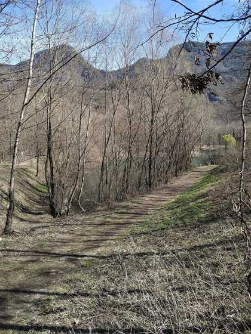
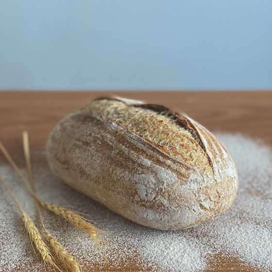
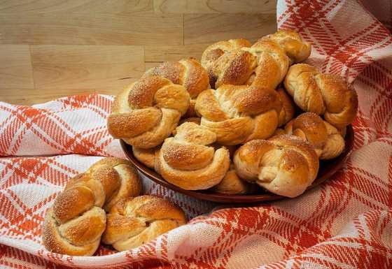
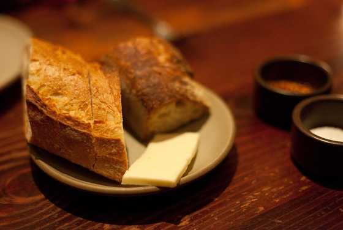

かまどパン
ビールをつくる麦の恵みを、まちの焼きたてへ。釜戸の醸造所が営むパン屋です。
ビールをつくる麦の恵みを、まちの焼きたてへ。釜戸の醸造所が営むパン屋です。
掲載写真はフリー素材のイメージで、お店の実際の商品・店内・外観ではありません。他の地域で撮影されたものや、撮影地が不明なものを含みます。
かまどパンは、岐阜県瑞浪市釜戸町のクラフトビール醸造所「カマドブリュワリー」が営むパン屋です(店のInstagramプロフィールより)。
カマドブリュワリーは、ビールを通じて釜戸のまちを元気にしたいという思いで始まった醸造所で、地域の素材や名所をビールの名前や味わいに映してきました。そのまちに、麦のかおりを分かち合うパン屋が加わった、というのがこのサイトのとらえ方です。
醸造で出る麦芽の搾りかすをパンに活かす取り組みも報じられています(報道ベース・詳細はお店でご確認ください)。




以下は、サイトのイメージをご覧いただくために制作側が作成した例です。実際のお客様の声ではありません。
ビールの醸造所のとなりにパン屋さんがあるのが楽しくて、散歩のついでに立ち寄りました。麦のいい香りがして、また来たくなります。
家に持ち帰って、朝ごはんにいただきました。素朴で飽きのこない味わいで、ゆっくり食べる時間が好きになりました。
お出かけ前にお店のInstagramで最新の様子を見てから行きました。まちの景色と一緒に楽しめる、ほっとするお店です。


| 店名 | かまどパン |
|---|---|
| 所在地 | 〒509-6472 岐阜県瑞浪市釜戸町3137-3 |
| 電話 | 準備中 |
| @camadopan |